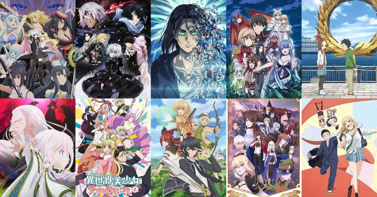

.jpg)

shonen
ถ้าพูดถึงแนวอนิเมะที่เป็นที่นิยมอย่างมากก็ต้องพูดถึง อนิเมะโชเน็น หรือก็คืออนิเมะที่มีกลุ่มเป้าหมายเป็นเด็กผู้ชายเป็นหลัก ซึ่งส่วนใหญ่จะเล่าเรื่องราวเกี่ยวกับมิตรภาพ การต่อสู้ การข้ามผ่านอุปสรรค และการเติบโตของตัวละคร
โดยอนิเมะแนวนี้มักมีเนื้อหาที่ไม่หนักหน่วงมากนัก แต่ก็ยังสามารถถ่ายทอดอารมณ์ออกได้หลากหลาย แต่ในปัจจุบันนี้อนิเมะโชเน็นหลาย ๆ เรื่องก็มีการสอดแทรกเนื้อหาที่หนักหน่วงจนแทบร้องขอชีวิตกันเลยทีเดียว และในบทความนี้เราก็จะมาแนะนำ อนิเมะโชเน็น สนุก ๆ ที่ไม่ควรพลาด จะมีเรื่องอะไรบ้างก็ไปดูกันเลย
Mashle (2023-2024)
เมื่อผู้ไร้พลังเวทคือสิ่งที่ผิดแปลกของโลกใบนี้ และปานบนหน้าคือสิ่งที่แสดงถึงพลังเวทในตัว ดังนั้นใครที่ไม่มีจึงต้องถูกจับกุมตัว และ มัช เบิร์นเดด ก็คือเด็กหนุ่มที่ไม่มีปานและไม่มีพลังเวทคนนั้น! เขาอาศัยอยู่ในป่ากับคุณปู่อย่างสงบ และฟิตกล้ามเนื้ออย่างหนักเพื่อเอาชีวิตรอดในโลกเวทมนตร์ แต่แล้วก็ดันมีคนมารู้เข้าว่าเขาคือความผิดแปลกและทำการตามจับกุม มัชจะทำอย่างไรต่อไป เมื่อเขาไม่มีพลังเวทแต่มีพลังกล้าม!
สามารถดูอนิเมะ Mashle ซีซัน 1-2 ซับไทย ถูกลิขสิทธิ์ได้เลยที่ online-station.net
fantasy
ถ้าพูดเรื่องราวแนวแฟนตาซี ส่วนใหญ่จะต้องมีเนื้อหาเกี่ยวกับเวทมนตร์ และแน่นอนว่าก็มีอนิเมะเวทมนตร์มากมายจำนวนไม่น้อยเลย ซึ่งแต่ละเรื่องนั้นก็ใช้เวทแตกต่างกันออกไป ไม่ว่าจะเป็นทั้งการต่อสู้ เรื่องราวเล็กน้อย รวมไปถึงภัยพิบัติ และนี่ก็เป็นอนิเมะแนวเวทมนตร์ที่เรานำมาฝากเพื่อน ๆ กัน โดยภายในลิสต์เราจะทำการรวบรวมเฉพาะอนิเมะที่มีธีมของเรื่องเกี่ยวกับเวทมนตร์ หรือการใช้พลังในเชิงเวทมนตร์เป็นหลักแต่เพียงเท่านั้น
Black Clover
บอกเล่าเรื่องราวในโลกเวทมนตร์ของเด็กหนุ่มผู้อาศัยอยู่ในหมู่บ้านชนบท 2 คน นามว่า ยูโน และ แอสตร้า โดยทั้งสองคนใฝฝันที่อยากจะเป็น “จักรพรรดิเวทมนต์”
ยูโนผู้มีพลังเวทย์เหลือล้น และได้รับกริมมัวร์(สมุดเวทย์)สี่แฉก ที่จักรพรรดิเวทมนต์คนก่อนเคยได้ใช้เหมือนกัน ส่วนแอสตร้าเป็นเด็กหนุ่มที่มีพลังกายสุดโต่ง แต่ได้รับกริมมัวร์(สมุดเวทย์)เก่า ๆ แต่มีห้าแฉก เส้นทางชีวิตขอทั้งสองคนจะนำพาให้ไปพบกับอะไรบ้าง และใครจะได้เป็นจักรพรรดิเวทมนต์
ทั้งนี้เพื่อน ๆ สามารถหา Black Clover แบล็คโคลเวอร์ อนิเมะซีซั่น 1-4 ดูได้บน online-station.net เลย
Romance
อนิเมะโรแมนติก คอมเมดี้ เป็นอนิเมะแนวหนึ่งที่ได้รับความนิยมเป็นอย่างมาก ซึ่งจะบอกเล่าเรื่องราวที่เกี่ยวกับเรื่องความรักพร้อมการสอดแทรกความตลก ขบขัน น่ารักไว้ในเรื่อง หากคุณได้ดูอนิเมะแนวนี้แล้วล่ะก็รับรองต้องหลุดยิ้มทั้งในแง่ความฟินและความฮาอย่างแน่นอน! และวันนี้เราจะมาแนะนำ อนิเมะโรแมนติก คอมเมดี้ ที่ทั้งฟิน ทั้งฮา พร้อมลิงก์ดูถูกลิขสิทธิ์ ที่คุณจะต้องชอบอย่างแน่นอน ว่าแต่จะมีเรื่องไหนบ้าง ว่าแล้วไปดูกันเลย!
My Love Story with Yamada-kun at Lv999
เรื่องราวของ อาคาเนะ นักศึกษาสาวที่จู่ ๆ ก็ถูกแฟนหนุ่มทิ้งอย่างกะทันหัน เธอเลยหาทางแก้เครียดด้วยการเข้าไปเล่นเกมที่แฟนเก่าเคยแนะนำ ทำให้ได้พบกับเพื่อนสุดน่าปวดหัวในเกมที่ชื่อว่า ยามาดะคุง
หลังจากนั้นเธอได้ไปอีเวนต์ของเกมที่เล่น แล้วได้พบกับหนุ่มหล่อคนหนึ่ง แต่หนุ่มหล่อคนนั้นคือ ยามาดะคุง เพื่อนร่วมกิลด์ผู้ใช้อวาตาร์พ่อหมดแอโฟร่สุดอึนนั่นเอง! เรื่องราวแสนวุ่นวายจึงเกิดขึ้น เรื่องราวจะเป็นเช่นไรต่อไป ไปรับชมอนิเมะซีรีส์เรื่องนี้กัน